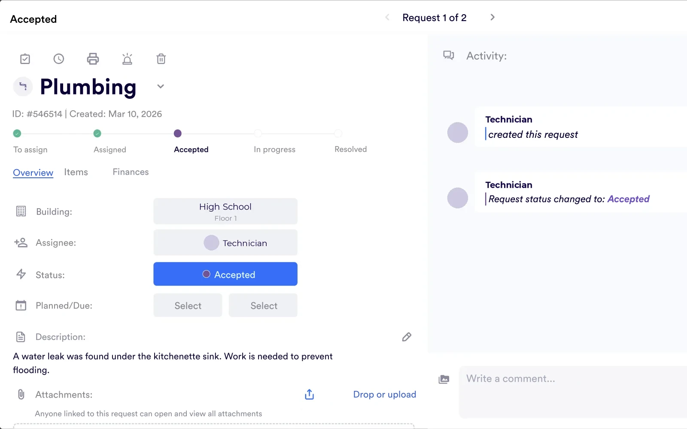

Work orders
Reported from a phone. Tracked to the finish.
Staff scan the QR code in the room or open the app, add a photo and send. The request lands on your team's board with its building and floor. You assign it, everyone sees where it stands, and the person who reported it hears back when it's done.
